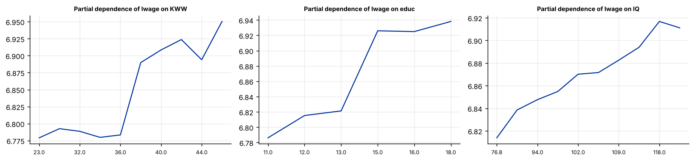

Run this model on your own data in Open Econometric Systems →
Step 1The question and the tools
What did the model learn? A forest or a boosted ensemble has no coefficients. Three summaries describe the fitted function \(\hat f(x)\):
- Permutation importance: shuffle one predictor in the test set and record how much the test \(R^2\) falls. A variable the model relies on costs a lot when shuffled. Because it is measured on data the model has not seen, it does not reward overfitting.
- Partial dependence: \(\mathrm{PD}_j(v) = \frac1n\sum_i \hat f(x_{ij}=v,\, x_{i,-j})\), the average prediction when predictor \(j\) is set to \(v\) and the others keep their observed values. It shows the shape of the effect (linear, saturating, threshold).
- Interaction strength: Friedman's \(H^2_{jk}\) is the share of the variance of the joint partial dependence of \(j\) and \(k\) that is not explained by the two separate partial dependences. It is 0 for an additive model.
Three cautions before you report importance
- Correlated predictors split their importance. If two variables carry the same information, shuffling one leaves the other to compensate, so each looks less important than the pair is.
- Importance is not an effect. A variable can be important because it proxies for something omitted.
- A weak model has little to interpret. If the test \(R^2\) is low, the importance of a variable is small in absolute terms, so report it next to the test fit.
How to write it: the model
We ask which characteristics a random forest uses to predict the log wage of 663 U.S. men, and how. We train the forest (200 trees, minimum leaf size 5) on 75% of the sample and compute the permutation importance of each of 15 predictors on the other 25%, as the fall in test R-squared averaged over 30 random shuffles. We plot the partial dependence of the log wage on the three most important predictors, measure pairwise interaction strength with Friedman's H statistic (Friedman and Popescu 2008) and compare the ranking with standardised OLS coefficients (Molnar 2022).
Step 2Load the data and look at the correlated predictors
import numpy as np
import pandas as pd
import oes_engine as oes # pip install -e open-econometric-systems/oes-engine
data = open("wage2.csv").read()
df = pd.read_csv("wage2.csv")
xs = [c for c in df.columns if c != "lwage"]
print(len(df), "men;", len(xs), "predictors")
print(df[["lwage", "IQ", "KWW", "educ", "exper", "tenure", "age"]].corr().round(2))663 men; 15 predictors
lwage IQ KWW educ exper tenure age
lwage 1.00 0.31 0.32 0.32 0.04 0.16 0.20
IQ 0.31 1.00 0.41 0.54 -0.23 0.02 -0.02
KWW 0.32 0.41 1.00 0.41 0.02 0.17 0.42
educ 0.32 0.54 0.41 1.00 -0.45 -0.03 0.05
exper 0.04 -0.23 0.02 -0.45 1.00 0.29 0.47
tenure 0.16 0.02 0.17 -0.03 0.29 1.00 0.28
age 0.20 -0.02 0.42 0.05 0.47 0.28 1.00How to read it
The predictors are correlated: education correlates 0.54 with the IQ score and 0.41 with the knowledge-of-the-world-of-work score (KWW), and the two test scores correlate 0.41. Each of the three correlates 0.31 to 0.32 with the log wage. These are the variables whose importance will be shared, so the ranking among them is less firm than the ranking between them and the rest.
Step 3Fit the model and measure importance
spec = dict(y="lwage", x=xs, top=3, repeats=30)
r = oes.run("interpret", data, spec)
oes.summary(r)
oes.show(r, "Permutation importance")Observations: 663
Predictors: 15
Test R-squared: 0.2646
Most important predictor: KWW
Rank correlation with |OLS coefficient|: 0.475
Permutation importance on the test set (random forest; test R-squared 0.2646)
Importance (fall in test R-squared) Std. dev. over repeats Share of total Standardised OLS coefficient
Predictor
KWW 0.0855 0.0229 0.2648 0.0367
educ 0.0518 0.0208 0.1604 0.0938
IQ 0.0516 0.0112 0.1598 0.0288
urban 0.0401 0.0133 0.1242 0.0930
meduc 0.0221 0.0145 0.0686 0.0273
age 0.0210 0.0105 0.0652 0.0209
tenure 0.0137 0.0116 0.0425 0.0416
exper 0.0109 0.0092 0.0337 0.0428
feduc 0.0103 0.0138 0.0320 0.0226
south 0.0061 0.0045 0.0190 -0.0189
hours 0.0048 0.0079 0.0149 -0.0337
married 0.0035 0.0031 0.0108 0.0664
sibs 0.0009 0.0024 0.0027 0.0187
black 0.0005 0.0022 0.0015 -0.0306
brthord -0.0039 0.0029 0.0000 -0.0048
Note: Each predictor is shuffled on the test set 30 times; importance is how much the fit falls. Correlated predictors share importance, so a small value does not mean a variable is unrelated to the outcome.How to read it
The forest explains 26.5% of the variance in the test sample, so there is a modest signal to interpret. The most important predictor is the KWW score: shuffling it lowers the test R-squared by 0.086 (standard deviation over shuffles 0.023), against 0.052 for education, 0.052 for IQ, 0.040 for urban residence and about 0.02 each for mother's education and age. Six predictors (region, hours, marital status, siblings, race and birth order) have importance below 0.01, and birth order is slightly negative, which means that shuffling it does not hurt the fit at all. The importance share of KWW is 26%. The rank correlation between importance and the absolute standardised OLS coefficient is 0.48: the two models agree that education and urban residence matter (OLS coefficients 0.094 and 0.093 per standard deviation) but not on KWW, which the forest ranks first and OLS gives only 0.037, or on marital status, which has the third-largest OLS coefficient (0.066) and almost no importance in the forest.
Step 4Shape of the effects: partial dependence
oes.show(r, "Partial dependence")
oes.plot(r, "Partial dependence of", ncols=3, size=(4.2, 3))Partial dependence profiles (5th to 95th percentile of each predictor)
From To Prediction at start Prediction at end Range R-squared of a straight line
Predictor
KWW 23.0 48.0 6.7791 6.9503 0.1713 0.726
educ 11.0 18.0 6.7861 6.9382 0.1520 0.894
IQ 76.8 127.0 6.8139 6.9112 0.1029 0.962
Note: The average prediction when the predictor is set to each value and the others keep their observed values. An R-squared of a straight line near 1 means the effect is close to linear.
How to read it
Moving KWW from its 5th percentile (23) to its 95th (48) raises the predicted log wage from 6.78 to 6.95, a range of 0.17 (about 17% in wages), and the profile is not a straight line (R-squared 0.73 for a linear fit), so the gain per point of KWW differs along the range; the chart shows where. Education raises the prediction by 0.15 between 11 and 18 years, and IQ by 0.10 between 77 and 127, with a nearly straight profile (R-squared 0.96). The forest does not use the whole range of the data equally, so partial dependence shows an average pattern and not the effect for any individual.
Step 5Do the leading predictors interact?
oes.show(r, "Interaction")Interaction strength between the leading predictors (Friedman's H statistic)
H-squared H
Pair
KWW and educ 0.0599 0.2448
KWW and IQ 0.0305 0.1748
educ and IQ 0.0109 0.1045
Note: The share of the variance of the joint partial dependence that is not explained by the two separate partial dependences, on 80 training observations. 0 means the two effects add up.How to read it
Friedman's H-squared is 0.060 for KWW and education, 0.031 for KWW and IQ and 0.011 for education and IQ. Between 1% and 6% of the variance of the joint partial dependence is therefore left after adding the separate effects: the interactions among the leading predictors are weak, and an additive model would capture most of what the forest has learned about them. The largest, KWW and education, is still small, so there is no evidence here that the value of education depends on the test score.
Step 6How stable is the ranking?
tops = {}
for name, sp in {"forest": dict(model="rf"), "boosting": dict(model="gb"), "forest, test share 40%": dict(model="rf", test_share=0.4)}.items():
rr = oes.run("interpret", data, dict(y="lwage", x=xs, top=2, repeats=20, **sp))
tops[name] = [f"{x[0]} ({x[1]})" for x in rr["tables"][0]["rows"][:4]] + [f"test R2 = {rr['summary'][2]['value']}"]
print(pd.DataFrame(tops, index=["1st", "2nd", "3rd", "4th", "fit"]).T.to_string())1st 2nd 3rd 4th fit forest KWW (0.0757) IQ (0.0493) educ (0.0477) urban (0.0375) test R2 = 0.2646 boosting educ (0.0496) urban (0.0484) KWW (0.0472) feduc (0.0279) test R2 = 0.1519 forest, test share 40% KWW (0.0894) educ (0.0481) urban (0.0455) IQ (0.0313) test R2 = 0.2814
How to read it
The forest's top predictors are KWW, IQ and education in the first split and KWW, education and urban residence with a 40% test sample; boosting, which fits worse (test R-squared 0.15 against 0.26 for the forest), puts education, urban residence and KWW first. The same few variables appear at the top in all three, in a different order. The order among correlated predictors, and the importance numbers themselves, depend on the model and the split, so say which variables are important and avoid ranking them to the second decimal.
Step 7Write the results
How to write it: results
The forest explains 26.5% of the variance of the log wage in a test sample of 25%. Permutation importance is largest for the KWW score (a fall in test R-squared of 0.086), followed by education (0.052), IQ (0.052) and urban residence (0.040); six of the 15 predictors have importance below 0.01. The partial dependence of the log wage on KWW, education and IQ is increasing, with ranges of 0.17, 0.15 and 0.10 between the 5th and 95th percentiles; the profile for KWW is the least linear (R-squared of a straight line 0.73). Interactions among the three leading predictors are weak (H-squared 0.01 to 0.06). Education, IQ and KWW are correlated (0.41 to 0.54), so their importances are not separable, and their order changes with the model and the test sample. These are descriptions of the fitted prediction function and not estimates of the effects of the variables on wages.
| Report | What | Where |
|---|---|---|
| Tools | Importance, partial dependence, H statistic | Step 1 |
| Data | Correlated predictors | Step 2 |
| Importance | Fall in test R-squared by predictor | Step 3 |
| Shape | Partial dependence profiles | Step 4 |
| Interactions | Friedman's H | Step 5 |
| Robustness | Model and test share | Step 6 |
References. Breiman, L. (2001), "Random Forests," Machine Learning 45. Friedman, J. (2001), "Greedy Function Approximation: A Gradient Boosting Machine," Annals of Statistics 29. Friedman, J. and Popescu, B. (2008), "Predictive Learning via Rule Ensembles," Annals of Applied Statistics 2. Fisher, A., Rudin, C. and Dominici, F. (2019), "All Models Are Wrong, but Many Are Useful," Journal of Machine Learning Research 20. Molnar, C. (2022), Interpretable Machine Learning, 2nd ed.